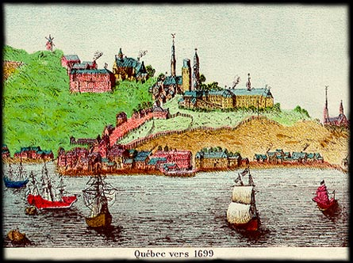

|
LA VIE DE
PIERRE CHORET
La jeunesse de Pierre est
traversée d'évènements importants
 Le
28 novembre 1698 Louis Buade de Frontenac décède
à Québec. Louis XIV nomme le 20
avril 1699 Louis-Hector de Callière gouverneur
de la Nouvelle-France.
Le 18ème siècle débute, la Nouvelle-France du Saint-Laurent est de plus en plus
fréquemment appelée le Canada.
Le 4 août 1701, c'est la signature de « la paix de Montréal »
avec les Cinq Nations iroquoises, un traité qui brise la coalition
anglo-iroquoise. Les raids entre Anglais et Français n'en continuent pas moins.
Le 15 mai 1702 la deuxième
guerre intercoloniale commence. En 1703, Philippe Rigaud de Vaudreuil devient
gouverneur général, jusqu'en 1725. Le Conseil souverain devient le Conseil supérieur.
En 1710, Michel Bégon de la Picardière
devient intendant de la Nouvelle-France,
jusqu’en 1726.

 "La
France y a l'espace, et l'Angleterre, le nombre..."
Au début du 18ème siècle, la Nouvelle-France, grâce à l'intrépidité
des explorateurs du siècle précédent, est un immense
territoire en Amérique. Les colons anglais sont confinés
près de l'océan. La guérilla continue, les raids
répondent aux raids. Dans chaque camp, on brûle, pille,
tue ou enlève des gens. Les habitants de la
Nouvelle-Angleterre se sentent de plus en plus menacés, même
s'ils sont alors 16 fois plus nombreux que les colons français. "La
France y a l'espace, et l'Angleterre, le nombre..."
Au début du 18ème siècle, la Nouvelle-France, grâce à l'intrépidité
des explorateurs du siècle précédent, est un immense
territoire en Amérique. Les colons anglais sont confinés
près de l'océan. La guérilla continue, les raids
répondent aux raids. Dans chaque camp, on brûle, pille,
tue ou enlève des gens. Les habitants de la
Nouvelle-Angleterre se sentent de plus en plus menacés, même
s'ils sont alors 16 fois plus nombreux que les colons français.
Des rapports officiels,
français et britanniques, montrent que chaque camp rêve de
conquérir le territoire de l'autre et de s'assurer ainsi un
monopole commercial colossal.
À l'encontre de 1690, cette fois-ci, l'Angleterre a le
dessus dans la guerre qu'elle mène en Europe, elle peut donc se
permettre d'aider la Nouvelle-Angleterre dans sa lutte contre la Nouvelle-France.
 En
1709, la reine Anne d'Angleterre ordonne "de délivrer les
colons anglais du voisinage des Français du Canada". En
1709, la reine Anne d'Angleterre ordonne "de délivrer les
colons anglais du voisinage des Français du Canada".
Des aveux arrachés à des prisonniers anglais révèlent aux
autorités de la Nouvelle-France l'imminence d'une attaque. Une flotte considérable doit quitter l'Angleterre avec de
l'argent, des munitions et des hommes. Quatre milles autres
hommes doivent attaquer par terre.
Autrement dit, le même plan qu'en 1690, mais avec plus de
moyens. Il va s'en dire que la Nouvelle-France est sur
le qui-vive, mais plutôt démunie devant l'ampleur de l'attaque
appréhendée.
Dans la nuit du 16 au 17 août 1710, on apprend, à Québec, qu'une
flotte arrive sur le fleuve. L'ordre est donné de disperser
les bestiaux dans les bois. Les femmes et les enfants se
retirent à la campagne, pendant que les hommes se rendent dans la
ville. Tous travaillent à fortifier la ville. Heureusement, on apprend quelques jours plus tard que c'était une
fausse alerte. Mais ce n'est que partie remise, les
dirigeants de Nouvelle-angleterre planifient déjà le partage du
territoire à conquérir.
La
grande offensive britannique
En 1711, Pierre Choret
a 21 ans et songe à se marier.
Mais une menace plane sur
les colons du Canada. Le même scénario de guerre qui s'est
déroulé l'année de la naissance de Pierre va bientôt se
répéter.
À Londres, le 16 avril 1711, un messager de la reine Anne se
présente chez sir Hovenden Walker pour l'enjoindre de
prendre le commandant d'une véritable armada avec mission de
s'emparer du Canada.
La flotte part de Portsmouth et arrive à Boston en
juillet. On y procède au ravitaillement et aux derniers
préparatifs. Le général Hill fait imprimer une lettre
qu'il fera distribuer aux Canadiens après la victoire. On y
lit que ceux qui n'offriront pas de résistance "seront
favorablement reçus et traités, eux et leurs héritiers....
jouiront de la possession de leurs terres, de la liberté de
religion....."
Le 9 août la flotte quitte Boston, en tout 12 000 hommes
sont de l'expédition. Or, les derniers jours d'août 1709 sont
marqués, dans l'entrée du fleuve Saint-Laurent, par le mauvais
temps et le brouillard. Dans la nuit du 2 septembre
Walker dort dans sa cabine, convaincu que sa flotte avance au
milieu du chenal du Saint-Laurent, à la hauteur de l'île
d'Anticosti. Mais, en réalité, une partie de sa flotte
s'échoue sur la Côte-Nord, à l'endroit que l'on appelle
maintenant la Baie-des-Anglais. Walker perd environ 1 600
hommes et plusieurs bateaux. Les survivants occupent les
deux jours suivants à tenter de sauver hommes et bagages.
Lors d'un conseil de guerre tenu le 4 septembre, la décision est
prise d'abandonner le projet d'attaque contre Québec et de mettre
le cap sur Boston. Pressé de remettre son rapport Walker retourne à Londres.
Les conclusions de ce dernier sont
"qu'en raison de l'ignorance des pilotes, il est
complètement impossible de remonter le fleuve Saint-Laurent avec
des hommes de guerre et des transports, aussi haut que Québec,
compte tenu de l'incertitude et de la rapidité des courants,
comme cela vient d'être prouvé par une expérience fatale."
Pendant ce temps, sur
les bords du Lac Champlain, Nicholson, à la tête de 2000 soldats
et miliciens et quelques centaines d'amérindiens, attend la
nouvelle de l'attaque de Québec pour faire jonction avec l'armée
de Walker, en attaquant Montréal et Trois-Rivières en
chemin. Apprenant la retraite de Walker, Nicholson en fait
autant.
Ouf !!! Le Canada est
sauvé sans avoir eu à se battre. Pierre peut se marier.


|

Reconstitution
hypothétique du retable de la première église de
Charlesbourg.
Dessin de Denis Castonguay.
|
Le 1 février
1712, Pierre Choret épouse Angélique Turcot dans la paroisse
Saint-Charles-Borromée de Charlesbourg.
Angélique a 20 ans, elle est la fille de
Jean Turcot et de Marie Rose.
Leur contrat de mariage a
été passé le 24 janvier précédent, devant le notaire
J.R. Duprac.
|
La première église de Charlesbourg, construite en
1697, se trouvait quelques mètres plus au nord que
l'église actuelle (ci-contre).
C'est dans cette première
église que Pierre épouse Angélique,
le couple s'installe à Charlesbourg.
Ils y ont leurs premiers enfants, Anne en 1713,
Élisabeth en 1714, et Pierre en 1716.Charlesbourg
est dans la partie nord de la Seigneurie
Notre-Dame-des-Anges. Les Jésuites l'ont développé, en
1665, en suivant un plan radial pour la division des
terres. Selon ce mode de lotissement, identifié
comme le Trait-Carré, les terres, découpées en
triangles, sont regroupées en roue autour de l'église au
centre, formant un carré parfait. Cette disposition
particulière offre l'avantage de rapprocher les habitants
les uns des autres. Cette structure exceptionnelle,
encore aujourd'hui identifiée comme le Trait-Carré de
Charlesbourg, voit sa sauvegarde assurée lorsqu'il est
classé arrondissement historique par le gouvernement du
Québec en 1965.
|

L'église actuelle Saint-Charles Borromée de Charlesbourg,
construite en 1827.
|
| Les
Turcot
Jean Turcot, le père
d'Angélique, est né vers 1643 à La-Roche-sur-Yon, en
France. Jean est un jardinier. Nous savons qu'il est en
Nouvelle-France en 1687. Il y a aussi des traces, en
1690 et en 1701, de contrats passés par Jean Turcot pour
travailler comme "engagé Ouest", probablement
pour faire la traite des fourrures dans les Pays d'En
Haut.
Le 12 janvier 1688, à 45
ans, Jean Turcot épouse Marie Rose, 21 ans, née
le 17 décembre 1666 à Sainte-Famille, Île
d'Orléans. Marie est la fille de Noël Rose, un
cordonnier né vers 1642 à Saint-Étienne-du-Mont dans
les environs de Paris, et de Marie Montminy, née le 26
février 1646 à Rouen, en Normandie. Les parents de
Marie s'étaient mariés le 7 novembre 1666 à
Québec.
Jean Turcot et Marie Rose ont
plusieurs enfants, dont notre aïeule Angélique, née le 6 septembre 1691. Ils
s' installent sur une terre du Trait-Carré de
Charlesbourg. Jean semble un
homme important puisque des gens influents sont
présents au baptême de sa fille Angélique: son
parrain est le capitaine des gardes de monsieur le comte de Frontenac,
et sa marraine, la femme de
monsieur de Villeray, premier conseiller au
Conseil Souverain.
Marie
Rose décède le 19 juin 1711. Jean, maintenant âgé de 69
ans, se remarie avec une veuve de Neuville, Geneviève
Ayotte, le 14 décembre 1712. Jean Turcot ne décède pas sur sa terre de Charlesbourg, mais à Saint-Laurent,
Montréal, le 5 juin 1729.
|
En 1715 la population
de la Nouvelle-France est de 18 500 habitants, et celle
de la Nouvelle-Angleterre de 434 000.
Le 1er
septembre 1715, Louis XIV décède. C’est son arrière-petit-fils
Louis XV, âgé de 5 ans, qui lui succède sur le trône. Le duc Philippe
d’Orléans assume la régence, puis le duc de Bourbon
et, finalement, le cardinal Fleury. Ce n'est qu'en
1748 que
Louis XV règne personnellement. |
Le
grand déménagement vers l'île de Montréal
Vers 1717, Pierre prend une grande décision: quitter la région de
Québec pour celle de Montréal. Nous n'en connaissons pas les raisons, mais elles
sont probablement économiques. Montréal est devenu
le centre économique du Canada, son expansion rapide
attire les jeunes. Ce déménagement
constitue toute une expédition, plus de 250 kilomètres,
aucun chemin carrossable, de jeunes enfants et, sûrement, les
effets domestiques essentiels pour l'installation de la famille
dans son nouveau logement. Voyagent-ils par le fleuve?
Fort probablement, le fleuve Saint-Laurent demeure encore à
l'époque la principale voie d'accès, et ce depuis les
débuts de la colonie.
Pierre installe
sa famille
dans la "Coste St-Michel". La paroisse Notre-Dame tient
les registres pour tout le territoire de l'île. Le baptême de
deux enfants y sont enregistrés en 1718 et en 1719. Les baptêmes
des suivants se retrouvent dans les registres de la paroisse
St-Laurent, qui ouvre en 1720, et le dernier dans les registres de
la paroisse du Sault-au-Récollet, qui ouvre en 1736. Il y a une
exception: trois enfants sont baptisés, de 1725 à 1728, dans la
paroisse Notre-Dame. Selon les actes de baptême des enfants,
Pierre et Angélique habitent dans la Coste St-Michel, finalement
rattachée à la paroisse Sault-au-Récollet.
Leurs voisins et
amis sont le couple Ignace Lemay - Anne Lecompte, dont deux filles
épouseront les deux fils Choret. Plusieurs Turcot sont aussi
habitants de la Coste St-Michel, dont trois frères d'Angélique:
Jean, Louis-Gabriel et Pierre, ainsi que leur père.
Il
semble que
Pierre soit un laboureur, comme c'est le cas de la plupart des
gens de ce temps. Mais, les gens pouvaient cumuler aussi d'autres
tâches. Nous savons, qu'en 1727, Pierre Choret est "contremaître
de la ménagerie des pauvres". C'est-à-dire qu'il
est en charge d'un genre de centre d'accueil et de bureau d'aide
sociale. Dès le 17ème siècle le gouvernement avait mis
sur pied des "bureaux des pauvres" pour venir en aide à
la population dans le besoin.
Pierre est le premier
des enfants de Pierre le Cadet à basculer vers Montréal mais
trois de ses plus jeunes frères, Ignace, Michel et
Jean-Baptiste, et une sœur, Marie-Joseph, vont le suivre, et
même s'y marier.
On retrouve une ordonnance du 7 octobre
1726 concernant la saisie d'un canot rempli de peaux de castors,
et d'une amende remise au fautif, par des frères Choret
travaillant comme gardes pour la Compagnie des Indes.
Il est sûr que, pour les jeunes hommes de l'époque, l'avenir est
vers l'Ouest. Même le gouvernement le croit, puisqu'il
envoie La Vérendrye en expédition toujours plus vers l'Ouest, il
s'arrêtera aux pieds des Rocheuses.

En 1735,
de Québec à Montréal, sur la rive nord du Saint-Laurent, on
inaugure le Chemin du Roy (sans asphalte évidemment), un chantier
de quatre ans comprenant 13 ponts. Désormais, on peut aller d’une
ville à l’autre avec un seul cheval, en quatre jours
Le 5 mai 1736,
Pierre le cadet Choret, le père de Pierre, décède à Beauport.
En 1742, les
deux fils
de Pierre parvenus à l'âge adulte, Pierre et Joseph, se
marient le même jour à deux sœurs Lemay, au
Sault-au-Récollet,
Le 23 janvier 1748,
Marie-Anne Beaugis, la mère de Pierre, décède à Beauport.
Pierre voit naître ses premiers petits-enfants avant de décéder,
le 22 juillet 1749, au Sault-au-Récollet, à l'âge de 59
ans.
Sa veuve Angélique se remarie, le 5 octobre 1750, à Jacques
Messier au Sault-au-Récollet. Ce dernier y décède le 10
février 1764. Nous ignorons encore la date de décès
d'Angélique.

|